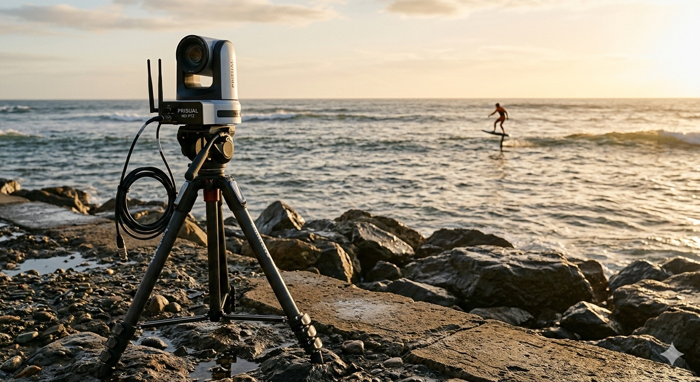
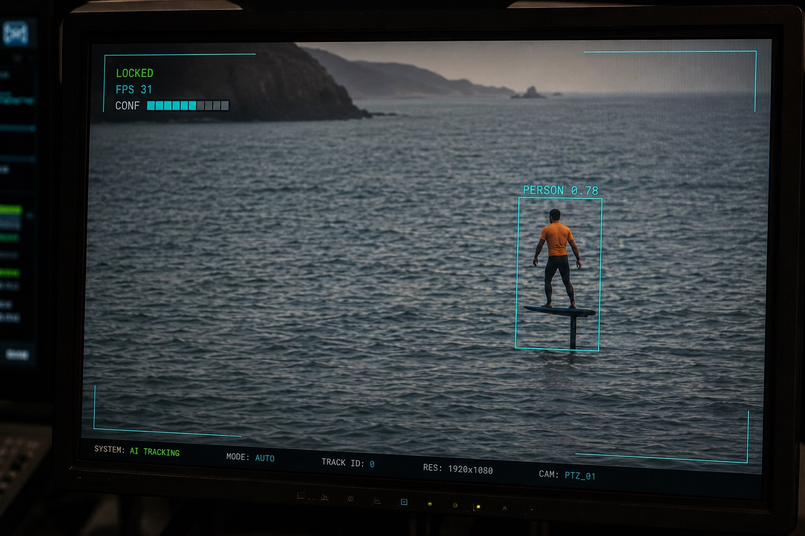
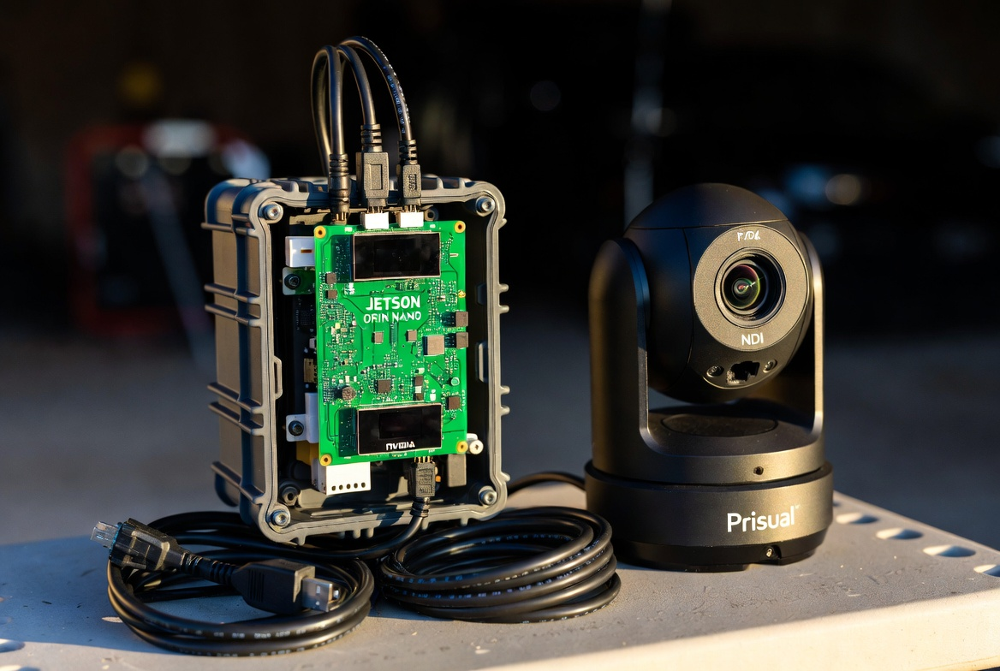
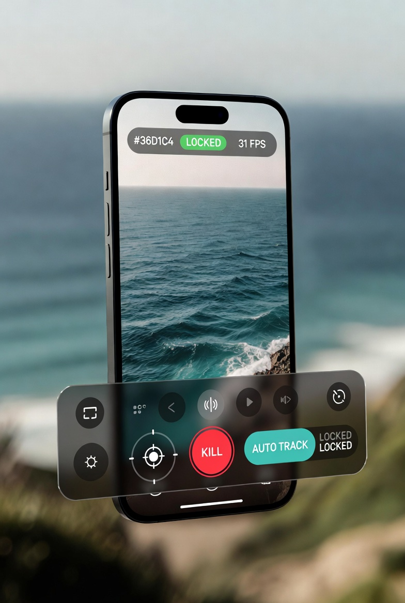

The WaveCam rig tracks a foil surfer offshore from a rocky beach at golden hour.
What WaveCam Does
WaveCam is a vision-based auto-filming rig designed around one specific use case: you paddle out, it locks on, and it keeps filming. No operator needed at the camera once a session is running.
The system combines three cues to keep you in frame across all distances:
Key Capabilities
| Capability | Status | Notes |
|---|---|---|
| Color-cue locking | LIVE | Orange rashguard HSV detection. Works at any distance where color is visible. |
| YOLO person detection | LIVE | YOLOv8n TensorRT at 30+ fps on the Orin. |
| Sensor fusion | LIVE | Color + YOLO combined for high-confidence lock. |
| PTZ auto-tracking | LIVE | RAW VISCA over UDP. Pan/tilt/zoom servo loop. |
| Cinematic auto-zoom | LIVE | Keeps subject at configurable size in frame. |
| iOS operator app | LIVE | Native SwiftUI — live feed, PTZ joystick, tuning. |
| Emergency stop (KILL) | LIVE | Always reachable, lowest-latency path. |
| Session recording | LIVE | RTSP /1 (1080p60) to local storage on the Orin. |
| LoRa GPS tracking | PENDING | Hardware ordered. Coarse point-and-zoom at 300 m. |

Live tracking view: teal bounding box (YOLO person detection) + orange color mask (rashguard HSV). Status: LOCKED 0.84 confidence.
Safety Model
WaveCam follows a strict authority model: the Orin is the authority. The phone is a remote control. The AI agent (Codex) is a supervisor. Nothing in the network or app path can override an Emergency Stop.
- KILL is sticky — once triggered, camera motion is latched off until you explicitly Resume.
- Headless operation — once a session is running, tracking continues if the phone disconnects (you're in the water; the rig keeps filming).
- No auto-steal — manual joystick control doesn't get hijacked by the vision tracker.
- Deadman timers — joystick velocity commands auto-stop if no fresh command arrives within ~800 ms.
Getting Started
First-time setup and pre-session checklist.

Jetson Orin Nano and Prisual NDI PTZ camera — the shore-side hardware stack.
Hardware Setup
- Mount the Prisual NDI PTZ camera on a stable tripod. Aim roughly at the water entry point.
- Connect the Orin Nano to the camera LAN (same switch or direct cable). The camera is at
192.168.100.88. - Power on the Orin and camera. The
wavecam.servicestarts automatically. - Plug your iPhone into the Orin via USB (USB-A to Lightning / USB-C). This creates the USB tether connection.
- Optionally connect to the same Wi-Fi network for the Wi-Fi route as a fallback.
Connecting the iOS App
- Open WaveCam on your iPhone.
- Tap the Connect tab.
- Ensure Live mode is selected.
- USB Tether URL:
http://172.20.10.8:8088/api/v1(default) - Wi-Fi URL:
http://192.168.1.155:8088/api/v1(your Orin's LAN IP) - Tap Apply. The status card should show CONNECTED.
Pre-Session Checklist
- Orin is powered and
wavecam.serviceis running (check the Supervisor tab) - Camera feed visible in the Live tab
- Color preset matches your rashguard color (default: Orange / red)
- SD card / NVMe has sufficient space (shown in the Live tab media readout)
- PTZ responds to manual joystick input (Live tab, joystick rail)
- KILL button tapped and confirmed → Resume before starting session
- Camera aimed at your water entry point
- Recording started (tap record in the Live tab)
Starting a Tracking Session
- Stand at your water entry point and ensure the camera can see you.
- Tap Auto Track in the Live tab. The system will attempt to lock onto you.
- Confirm the tracking state shows LOCKED.
- Walk/paddle into the water. The camera follows automatically.
- Once you're out, the session runs headless. You don't need to hold the phone.
Ending a Session
- Tap Stop Track in the Live tab.
- Tap the recording stop button.
- Browse recordings in the Live tab's media section or via the Orin web dashboard at
http://[orin-ip]:8088.
Operating the App
A walkthrough of the iOS app's tabs and what each one controls.
App Tab Overview
The main screen. Shows the MJPEG preview feed, tracking status HUD (LOCKED / SEARCHING / FPS / confidence), recording controls, and the Glass Rail — a floating control strip with: Emergency Stop, PTZ joystick, Auto Track, Manual zoom. All three safety-critical controls (KILL, PTZ, feed) communicate directly with the Orin API and bypass the preview stream for lowest latency.
All tunable tracking parameters. Every change applies instantly via POST /api/v1/config/hot — no restart needed. Settings are grouped into cards: Target, Detection, Motion, Cinematic Zoom, and feature-detected Advanced cards. See Section 04 for the full reference.
Shows real-time health of all services (wavecam, supervisor, gps-server, cloudflared). A green dot with a pulsing glow = healthy. Red = stopped or failed. Also shows the session state, safety/KILL status, and current revision counter. The Summon Codex button requests an on-demand diagnostics session from the AI backend agent (supervise-only — it cannot move the camera).
Set the Orin API URLs (USB tether and Wi-Fi), auth token (optional), and switch between Live and Mock mode. Mock mode shows local simulated data when the Orin is unreachable — useful for testing the app without hardware. The Mock fallback toggle automatically shows mock data if the live API becomes unreachable mid-session.

WaveCam iOS app — Live tab with Glass Rail controls, tracking HUD, and MJPEG preview feed.
The Live tab is your primary operator surface. The MJPEG preview shows what the camera sees, annotated with the tracking bounding box and confidence score. The Glass Rail at the bottom provides instant access to every safety-critical control.
The Glass Rail (Live tab controls)
The Glass Rail is a floating control strip anchored to the bottom of the Live screen. It uses Liquid Glass on iOS 26+ and stays visible in both portrait and landscape.
- KILL (red stop) — Emergency stop. Immediately halts all camera motion, latches KILL, drops PTZ ownership. One tap. Visible in both orientations.
- PTZ Joystick — Manual pan/tilt. Uses a deadman model: camera stops ~800 ms after you lift your finger. Does not steal PTZ from the auto-tracker unless you explicitly tap Stop Track first.
- Auto Track / Stop Track — Toggle autonomous tracking.
- Zoom In / Out — Manual zoom. Works even while auto-tracking is active (suppresses Cinematic Zoom briefly).
- Record — Start/stop RTSP recording to local Orin storage.
Connection Routes
The app automatically tries the USB tether URL first, then falls back to Wi-Fi. The active route is shown in the Connect tab status card.
iPhone is physically connected to the Orin via USB. Most reliable. Gives the Orin internet uplink via iPhone tethering simultaneously. Default and preferred.
Orin and iPhone on the same network. Works at the beach via iPhone hotspot. Slightly less reliable than tether; can suffer from beach Wi-Fi interference.
Mock Mode
Set Mode → Mock in the Connect tab to run the app with simulated data. Useful for UI development, demonstrating the app, or verifying layout without the Orin hardware present. No commands are sent to the camera in Mock mode.
Tuning Reference
Every tunable parameter, what it does, when to change it, and how to diagnose problems by symptom. All settings apply live — no restart required.
POST /api/v1/config/hot. You can adjust while tracking is active and see the result immediately. Restart-only settings (camera source, model path) are shown in the Service card at the bottom.Sets the HSV color range the color detector scans for. The camera locks onto the brightest matching blob and keeps it centered. Orange / red is tuned for a bright orange rashguard and captures both the orange torso and any reddish-orange tones in wet neoprene.
- Wearing a different color — switch to the matching preset. Use a color that's unique in your filming environment (avoid blue/green near ocean/foliage).
- Camera locks onto background objects — your current color preset is too common in the environment. Switch to a more distinct color.
- Orange objects on the beach (buoys, boats) — enable Require YOLO person to filter out non-person blobs.
The COCO object class YOLO tries to detect. The color blob is matched against the nearest bounding box of this class. For foil surfing, person is almost always correct.
- Very long distance (>250 m), person not detectable but surfboard is — try
surfboard (37)as a backup. Experimental. - Normal foil/surf sessions — leave at
person (0).
Read-only. Shows the path to the active inference engine. Current production model: yolov8n.engine (TensorRT, YOLOv8 nano). To change the model, edit the config file on the Orin and restart the service.
Vertical position in the frame the camera tries to keep the top of the detected bounding box at. This controls where in the frame your body is framed vertically.
- Head is cut off in frame / too much empty water below — move toward
HEAD (0.25). - Too much empty sky, subject in lower half of frame — move toward
CENTER (0.50)or higher. - Artistic preference for head-room — set to 0.30–0.35 (chest-high framing, some sky above).
The minimum YOLO detection score to consider a bounding box valid. Lower values detect at greater range and in worse conditions but accept more false detections. Higher values require strong visual evidence of a person before locking.
- Camera locks onto other people / objects on the beach — raise to 0.50–0.65.
- Camera loses YOLO lock at ~100 m offshore — lower to 0.20–0.25. You appear smaller; YOLO needs a lower threshold to confirm you.
- Crowded scene with many people — raise to 0.60+ and enable Require YOLO person to reduce false locks.
Off — the system can lock and track by color cue alone, even when YOLO can't confirm a person at the blob location. Best for offshore use at distances where you're too small for YOLO to reliably detect. On — will only lock when YOLO has confirmed a person box near the color blob. Fewer false locks, but you'll lose lock earlier as you move offshore.
- Camera frequently chases orange buoys or boats (no YOLO check) — turn ON.
- Camera loses lock at 100–150 m even with good color signal — turn OFF (default). Color-only tracking extends range.
- Recommendation for foil surfing — keep OFF. The orange rashguard is distinctive enough; YOLO-only mode limits effective range.
Overlays the color blob detection mask on the MJPEG preview stream. Useful for diagnosing color detection: you can see exactly what the system is detecting as "orange" in the scene.
- Camera can't lock and you want to see why — turn ON. Check whether the orange blob is appearing around you.
- Unexpected locks on background objects — turn ON to see if the mask includes those objects.
- Normal session — leave OFF (clearer preview image).
Maximum horizontal (left/right) tracking speed sent to the camera via VISCA. Higher speeds allow the camera to follow fast direction changes; lower speeds produce smoother, more cinematic pans but may not keep up with aggressive maneuvers. Foil surfing involves substantial horizontal travel, so pan speed is usually the most important axis to tune.
- Camera falls behind when you jibe or change direction quickly — raise to 14–16.
- Camera overshoots, pendulums back and forth after a maneuver — lower to 7–8.
- Subject appears at medium distance, smooth laps — 10 is usually fine.
Maximum vertical (up/down) tracking speed. Foil surfing doesn't involve extreme vertical motion (apart from occasionally going airborne), so tilt speed typically matters less than pan speed.
- Camera doesn't tilt up fast enough when you pop off a wave — raise to 16–18.
- Camera dips aggressively when a wave briefly obscures you — lower to 7–9 to reduce tilt sensitivity.
- Standard foiling (no jumps) — 10–12 works well.
A tolerance zone around the frame center. When the tracking error (distance from target to the aim point) is smaller than the deadband, the camera doesn't move. This prevents micro-corrections that produce constant jittery motion. Think of it as how far off-center the subject can drift before the camera reacts.
- Camera micro-jitters constantly even when subject is relatively centered — raise to 0.10–0.15.
- Subject drifts noticeably to the frame edge before the camera responds — lower to 0.03–0.04.
- Windy day, tripod shaking slightly — raise to 0.12–0.18 to absorb vibration-induced errors.
- Very stable tripod, want tight framing — 0.05–0.07.
Adds a velocity-prediction component to camera movement. At 0.0, the camera is purely reactive — it only moves to correct observed error. With positive gain, the system adds an extra push in the direction the subject is currently moving, anticipating where they'll be. Useful for consistent-speed runs across the frame.
- Camera is always one step behind on straight runs — try 0.2–0.3. Evaluate in preview before a session.
- Camera overshoots or "hunts" (oscillates) after enabling FF — reduce gain or increase the FF deadband multiplier (in Motion Advanced).
- Unpredictable motion (jumping, changing direction often) — keep at 0. Feed-forward amplifies the wrong prediction for erratic motion.
When enabled, the camera automatically adjusts its zoom level to keep the subject at the target size in frame. As you paddle further from shore, it zooms in to maintain frame fill. As you come closer, it zooms out. Creates a consistently cinematic-looking result regardless of your distance.
- Subject appears tiny when far offshore and huge when close — enable Cinematic Zoom.
- Prefer a fixed wide angle for context shots — leave off.
- Zoom is hunting / unstable — check that Subject Size and the zoom deadband (in Motion Advanced) are tuned.
Target size of the subject (their bounding box height) as a fraction of the full frame height. 0.2 = subject is 20% of frame height (wide environmental shot); 0.5 = subject fills half the frame; 0.8 = tight close-up.
- Too much empty ocean, subject too small — raise to 0.55–0.65.
- Subject fills frame, losing environmental context (water spray, board) — lower to 0.25–0.35.
- Ideal for foil surfing — 0.30–0.40 shows the foil, board, and some wake while keeping you recognizable.
Detection Advanced
YOLO inference runs once every N captured frames. Between runs, the last bounding box is held (with a TTL). Higher N reduces GPU/CPU load but increases detection latency. At 25 fps and N=3, YOLO updates ~8× per second.
- Orin is thermally throttling or dropping frames — raise to 5–8.
- Fast-moving subject that slips out of the stale YOLO box — lower to 1–2.
The fusion confidence score required to transition from SEARCHING state to LOCKED. Higher = requires stronger combined color+YOLO agreement before locking. Creates a hysteresis band with the unlock threshold — keep the gap between them ≥0.15.
- Camera keeps locking onto wrong targets — raise to 0.70–0.80.
- Takes too long to acquire initial lock — lower to 0.50.
Confidence below which the system releases lock and returns to SEARCHING. Low values make the lock "sticky" — the camera holds even with a weak signal (good for offshore tracking). High values drop lock quickly when confidence drops.
- Camera keeps losing and re-acquiring lock offshore — lower to 0.20–0.25.
- Camera holds onto wrong target too long — raise to 0.45.
- Always keep unlock_threshold < lock_threshold by at least 0.15.
Maximum pixel distance between the color blob centroid and the YOLO bounding box center for them to be considered the same object. If they're farther apart than this, they're treated as unrelated detections and won't fuse.
- Fusion fails even though both color and YOLO clearly show you — raise to 160–220 (common at long range where boxes are small).
- System incorrectly fuses color blob with a different person's YOLO box — lower to 60–80.
Color (Advanced)
Minimum pixel area of a detected color blob for it to count as a valid target candidate. Small values detect you when you're far offshore (small blob). Large values filter out small false positives (light reflections, tiny objects).
- Camera chases small orange flashes on the water (sun reflections, markers) — raise to 150–400.
- Loses color lock at long range where you appear small — lower to 20–40.
Maximum pixel area of a color blob. Prevents very large orange/red regions (sunset sky, a large boat hull, bright orange safety flags) from being tracked as the subject.
- Camera locks onto a large orange boat or orange-tinted sunset sky — lower to 50,000–80,000.
- Default (200,000) rarely needs changing.
Size of the morphological structuring element used to clean up the HSV color mask. A morphological close operation fills gaps and smooths boundaries. Larger kernel = more aggressive gap-filling and merging of nearby blobs. Smaller = preserves fine blob boundaries.
- Color mask is fragmented into multiple small pieces (noisy detection) — raise to 7–11.
- Blobs merging together incorrectly (rashguard + nearby orange object becoming one) — lower to 3.
Motion Advanced
When feed-forward is active, the effective deadband is multiplied by this value. Prevents the feed-forward component from producing rapid oscillating commands near the center of frame. Tune alongside ptz.ff_gain.
- Feed-forward causes oscillation near center — raise to 2.0–3.0.
- Feed-forward feels slow to engage — lower toward 1.0.
Minimum VISCA speed sent when the system wants to move. Some PTZ cameras have a mechanical dead zone where very low speed commands (1–2) don't produce actual movement. Raising min speed ensures every command results in visible motion.
- Camera sends VISCA commands but barely or doesn't move for small corrections — raise to 2–3.
Minimum time between successive VISCA UDP commands. Prevents flooding the camera's command buffer. The camera processes one command at a time; sending too rapidly can cause commands to be dropped, resulting in jerky motion.
- Camera motion is erratic, jerky, or seems to skip — raise to 0.08–0.12.
- Response feels sluggish for quick corrections — lower to 0.03.
Reverse the direction of tilt or pan commands. For non-standard camera mounting orientations (inverted, mirror-flipped). If the camera pans or tilts in the wrong direction, toggle the relevant invert flag.
Compression quality of the MJPEG preview stream sent to the iOS app. Higher quality = clearer preview but more bandwidth consumed on the USB tether or Wi-Fi link. This only affects the monitoring preview — recorded footage always uses the full-quality RTSP stream directly.
- Preview feed stutters or lags on the phone — lower to 50–60.
- Preview is too blurry to verify tracking accurately — raise to 80–85.
| What you're experiencing | Likely cause | Setting to try |
|---|---|---|
| Camera won't lock — keeps showing SEARCHING | Wrong color preset, or color blob not visible | Check color.preset matches clothing; enable Show Mask to debug |
| Camera locks onto wrong person / object on beach | Confidence too low or no person gate | Raise detector.conf to 0.50–0.65; enable fusion.require_person |
| Loses lock as you paddle past ~100 m | YOLO can't detect person at range; Require Person on | Disable fusion.require_person; lower detector.conf to 0.20–0.25 |
| Camera micro-jitters, twitches constantly | Deadband too small for this tripod/conditions | Raise ptz.deadzone to 0.10–0.15 |
| Camera barely moves, subject drifts to edge | Deadband too large | Lower ptz.deadzone to 0.03–0.05 |
| Camera always one step behind on straight runs | No predictive motion | Raise ptz.ff_gain to 0.2–0.4 |
| Camera overshoots then swings back | Pan speed too high or feed-forward too aggressive | Lower ptz.max_pan_speed; reduce ptz.ff_gain |
| Head cut off in frame / too much water below | Aim point too low | Move fusion.person_aim_y toward HEAD (0.25) |
| Subject tiny in frame, lots of empty ocean | Cinematic zoom target too small | Raise ptz.zoom_target_frac to 0.55–0.65 |
| Camera keeps dropping lock and re-acquiring offshore | Unlock threshold too high | Lower fusion.unlock_threshold to 0.20–0.25 |
| Camera locks onto large orange boat / sunset water | Large color blobs accepted | Lower color.max_area to 50,000–80,000 |
| Camera chases tiny orange reflections on water | Small color blobs accepted | Raise color.min_area to 150–400 |
| Color detection is fragmented, bouncing around | Noisy mask, small kernel | Raise color.morph_kernel to 7–11 |
| Preview feed choppy / lagging on phone | Too much JPEG bandwidth | Lower web.jpeg_quality to 50–60 |
| Camera sends commands but barely moves | Min speed below camera's mechanical threshold | Raise ptz.min_speed to 2–3 |
| Camera motion is jerky, seems to skip steps | Command interval too short (buffer overflow) | Raise ptz.command_min_interval to 0.08–0.12 |
| Camera pans / tilts in the wrong direction | Inverted mount orientation | Toggle ptz.invert_pan or ptz.invert_tilt |
GPS Tracking
LoRa GPS hardware is on order. This section describes the planned architecture and will be updated when the hardware is operational.
Why GPS?
At distances beyond 150–200 m, you become a small pixel in the camera frame. YOLO confidence drops. Color detection still works, but the blob is small enough that temporary wave occlusion or whitecap interference can break lock. GPS solves this by giving the system a ground-truth location independent of visibility.
Planned Architecture (LoRa)
How GPS and Vision Fuse
The fusion engine operates in overlapping modes, automatically selecting the best available source:
| Mode | Status | When active |
|---|---|---|
| VISUAL | LIVE | Subject in frame, YOLO and/or color confirmed. Highest precision. |
| GPS_ASSISTED | PENDING GPS | Both vision and GPS active. GPS validates visual tracking. Best of both worlds. |
| GPS_PRIMARY | PENDING GPS | Visual lost (wave, submerge), GPS drives the camera until re-acquisition. |
| SEARCHING | LIVE | All cues lost. Camera holds last position, awaits recovery. |
GPS Reference Frame
The camera's pan-home position ("straight ahead") defines the reference heading. GPS bearing from the base station (Orin's known position) to the subject gives a target pan angle. No magnetometer is used — the motor interference environment near NEMA steppers or an electric foil makes compass readings unreliable.
Calibration (When GPS Is Live)
A one-time calibration step will set:
- Base lock — GPS fix for the camera's ground position.
- Heading landmark — a known object at a known bearing to align pan-home to true bearing.
- Dry-run verification — point the camera at a GPS-tagged location without entering full tracking, to verify calibration.
Technical Reference
Software stack, hardware specifications, API surface, and system design theory.
Software Stack
Orin Backend
| Component | Version / Notes | Role |
|---|---|---|
| OS | Ubuntu 22.04 (JetPack 6.2) | Jetson-specific OS image with CUDA 12.6, TensorRT pre-installed |
| Python | 3.10.x (JetPack default) | Runtime for all backend services |
| FastAPI | 0.109+ | Control API HTTP/WebSocket server |
| Uvicorn | 0.27+ | ASGI server for FastAPI |
| Pydantic | ≥ 2.0 | Config validation and API schemas |
| Ultralytics (YOLOv8) | 8.x | Person/object detection model trainer and runtime |
| TensorRT | 8.6 (JetPack 6.2) | Hardware-accelerated inference. Model: yolov8n.engine |
| OpenCV | 4.x (CUDA build, system) | Camera capture, HSV color detection, image I/O |
| NumPy | 1.x | Array operations for image processing and fusion math |
| PyYAML | 6.x | Config file parsing (config.orin.servo.yaml) |
| CUDA | 12.6 (cu126) | GPU compute for TensorRT and OpenCV operations |
Vision Pipeline Modules
| Module | File | Responsibility |
|---|---|---|
| Capture | capture.py | RTSP frame acquisition from camera /2 substream |
| Color Detector | color_detector.py | HSV blob detection — finds the rashguard color cue |
| Color Presets | color_presets.py | HSV range definitions for each color option |
| Detector | detector.py | YOLOv8n TensorRT inference for person detection |
| Fusion | fusion.py | Combines color + YOLO into a single high-confidence target |
| PTZ Owner | ptz_owner.py | Ownership arbitration — prevents multiple controllers from fighting |
| PTZ VISCA | ptz_visca.py | RAW VISCA-over-UDP command encoding for the Prisual PTZ |
| Controller | controller.py | Visual servo loop: error → pan/tilt/zoom commands |
| Recorder | recorder.py | FFmpeg-based RTSP /1 recording to local storage |
| Control API | control_api.py | FastAPI router — all external control surfaces talk here |
| Supervisor | supervisor.py | Deterministic health monitor and service watchdog |
| Pipeline | pipeline.py | Main run loop orchestrating all modules at target FPS |
| Overlay | overlay.py | Annotates the preview MJPEG stream with tracking state |
iOS App
| Component | Version | Role |
|---|---|---|
| Swift | 5.9+ | Primary language |
| SwiftUI | iOS 17.0+ | UI framework. iOS 26: Liquid Glass effects |
| xcodegen | 2.x | project.yml → .xcodeproj (no committed Xcode project file) |
| WaveCamClient | Build 9 | Swift actor — HTTP/WebSocket API client for the Control API |
| Transport | URLSession | REST + MJPEG streaming |
| Target | iPhone only | Personal dev build, team 78725QX6PZ |
| Bundle ID | com.stonezone.WaveCam | Installed via devicectl on Zack's iPhone |
Hardware
| Component | Spec | Role |
|---|---|---|
| Compute | NVIDIA Jetson Orin Nano | Vision pipeline, control API, all backend services |
| Camera | Prisual NDI PTZ | Pan/tilt/zoom via RAW VISCA UDP port 1259. RTSP /1 1080p60, /2 640×360. |
| Camera LAN IP | 192.168.100.88 | VISCA UDP and RTSP endpoint |
| Orin LAN IP | 192.168.100.10 | Camera network. Home LAN: 192.168.1.155 |
| GPS (pending) | SeeedStudio Wio Tracker L1 Lite | LoRa + Meshtastic. nRF52840 MCU, L76K multi-constellation GNSS |
| iPhone tether | USB-A host port | 172.20.10.8/28 subnet. Provides uplink + control path |
| Legacy gimbal | STM32 Nucleo F401RE + 2× NEMA17 | Superseded by Prisual PTZ. Firmware kept in nucleo/ |
Control API (/api/v1)
The Control API is the single interface between all operator surfaces (iOS app, web dashboard, supervisor, Codex agent) and the WaveCam core. It enforces the ownership model and KILL semantics.
| Endpoint | Method | Description |
|---|---|---|
| /api/v1/status | GET | Full system state: session, safety, PTZ owner, tracking, media, services |
| /api/v1/telemetry | WS | WebSocket push of status snapshots for real-time UI |
| /api/v1/preview.mjpeg | GET | 640×360 annotated MJPEG preview stream |
| /api/v1/safety/kill | POST | Emergency stop — always accepted, sticky latch |
| /api/v1/safety/resume | POST | Clear KILL latch (does not restart tracking) |
| /api/v1/ptz/stop | POST | Stop pan/tilt/zoom, hold manual ownership |
| /api/v1/ptz/auto | POST | Start autonomous vision tracking |
| /api/v1/ptz/velocity | POST | Manual joystick (normalized -1..1, deadman timeout) |
| /api/v1/ptz/zoom | POST | Manual zoom (velocity mode, deadman timeout) |
| /api/v1/config | GET | Current config + hot-key schema |
| /api/v1/config/hot | POST | Apply live tuning patch (all Tune tab settings) |
| /api/v1/media/status | GET | Recording status, segment name, free disk space |
| /api/v1/media/record/start | POST | Begin RTSP /1 recording |
| /api/v1/media/record/stop | POST | Stop recording |
| /api/v1/system/restart | POST | Restart wavecam.service (use for restart-only config changes) |
| /api/v1/agent/summon | POST | Request on-demand Codex diagnostic session |
Safety Model
The safety model is hierarchical and non-preemptable:
- KILL — highest priority. Accepted from any authenticated client. Immediately stops all motion, drops PTZ ownership, latches. Cannot be overridden by any tracking state or agent command.
- PTZ Owner — only the current owner can command the camera. No auto-steal. The vision tracker owns while Auto Track is running; manual joystick claims manual owner.
- Deadman timers — manual velocity commands auto-stop ~800 ms after the last command, preventing the camera from running away if the app disconnects.
- Agent (Codex) — supervise-only. Can call the same API endpoints as the operator (if authorized) but camera motion is still gated by KILL and owner model. Cannot enter the frame-level servo loop.
Design Theory: Why This Architecture
The core design constraint is: Zack is in the water 50–300 m out. The system must run headless once started. The worst-case failure must be "camera stops" not "camera runs away."
- The deterministic core (capture → fusion → servo → VISCA) runs without any network dependency.
- The Control API is a thin seam — it accepts high-level intents and enforces safety semantics, but never delays the servo loop.
- The iOS app and Codex agent are both clients of the same API, preventing competing control paths.
- Headless operation: losing the phone connection means the Orin keeps tracking. Reconnecting picks up seamlessly.
Troubleshooting
Common field problems and how to diagnose and resolve them.
App Can't Connect to Orin
- Check the USB cable is seated firmly (both ends).
- Verify Personal Hotspot is enabled on your iPhone (Settings → Personal Hotspot → Allow Others to Join).
- Open the Connect tab — the Tether URL should show
172.20.10.8:8088. Try refreshing. - SSH to the Orin:
ssh orin(alias for zack@192.168.1.155). Confirmwavecam.serviceis running:systemctl status wavecam. - If the service is stopped:
sudo systemctl start wavecam.
Tracking Won't Lock
- Enable Show Detection Mask in Tune → Detection to see what the color detector is finding.
- Check the Color Preset matches your clothing. Walk in front of the camera to verify the blob appears around you.
- Lower YOLO Confidence to 0.20–0.25 if you're offshore and person detection is weak.
- Ensure Require YOLO Person is OFF if you're relying on color-only tracking at distance.
- Check the Lock Threshold — if it's above 0.70, lower it slightly to ease initial acquisition.
Camera Motion is Erratic / Jittery
- Micro-jitter — raise Deadband (ptz.deadzone) to 0.10–0.15.
- Overshooting — lower Max Pan Speed. Disable or reduce Feed-Forward Gain.
- Skipping / stuttering — raise Command Interval (ptz.command_min_interval) to 0.08–0.12.
- Correct direction but very slow — raise Min Speed (ptz.min_speed) to 2–3.
- Wrong direction — toggle Invert Pan or Invert Tilt.
Camera Keeps Losing Track Offshore
- Ensure Require YOLO Person is OFF.
- Lower Unlock Threshold to 0.20–0.25 so the system holds lock with weak signal.
- Lower YOLO Confidence to 0.20 so it accepts detections at range.
- Lower Min Color Blob Area if you appear as a small blob at distance.
- Enable Cinematic Zoom to automatically zoom in as you move offshore — keeps you larger in frame, improving all detection.
Service Not Running (Supervisor Tab)
| Service | If Red / Stopped |
|---|---|
| wavecam.service | Tap Restart WaveCam in Tune → Service, or SSH: sudo systemctl restart wavecam |
| wavecam-supervisor | SSH: sudo systemctl restart wavecam-supervisor |
| gps-server | Not critical until GPS hardware deployed. OK to ignore for vision-only sessions. |
| cloudflared | Remote access tunnel — not required for local LAN use. SSH: sudo systemctl restart cloudflared |
Preview Feed Not Showing
- Confirm connected in Live mode (Connect tab shows CONNECTED).
- Check that the camera is powered and on the LAN (
ping 192.168.100.88from Orin). - Verify the RTSP /2 stream is reachable from the Orin.
- Lower JPEG Quality if the feed connects but stutters (bandwidth constraint).
Recording Not Starting
- Check available disk space — shown in the Live tab media readout and in Supervisor status.
- Verify the recorder service is running (Supervisor tab).
- Check that the RTSP /1 stream is accessible from the Orin (
ffprobe rtsp://192.168.100.88:554/1).
Emergency Recovery Steps
- Tap KILL.
- If KILL doesn't respond (app frozen): SSH to Orin and run
python3 -c "import wavecam; wavecam.kill()"— or power off the Orin. - On reconnect, verify KILL status shows KILLED in the Supervisor tab before resuming.
Glossary
Key terms used throughout WaveCam documentation and the iOS app.
- VISCA
- Sony's PTZ camera control protocol. WaveCam uses RAW VISCA over UDP (not TCP, not the 8-byte Sony-framed variant) to command pan, tilt, and zoom on the Prisual PTZ camera.
- PTZ
- Pan–Tilt–Zoom. The three motorized axes of the Prisual camera. Pan = horizontal rotation, Tilt = vertical rotation, Zoom = focal length adjustment.
- PTZ Owner
- The Control API's ownership model for camera movement. Only the current owner can issue PTZ commands. Owners:
idle,manual,vision_follow,gps_tracker. No auto-steal — manual control doesn't take over from the auto-tracker without an explicit handoff. - KILL
- Emergency stop. Immediately stops all camera motion, drops PTZ ownership, and latches a safety flag that blocks all further movement commands until explicitly Resumed. Always the highest-priority action in the system.
- Deadman
- A safety timer on joystick commands. If no fresh velocity command arrives within ~800 ms, the camera automatically stops. Prevents the camera from running away if the app loses connection mid-joystick.
- Fusion
- The module that combines color detection and YOLO detection into a single tracking signal. Fusion computes a confidence score, manages LOCKED/SEARCHING state transitions, and arbitrates which sensor is driving the camera position estimate.
- Deadband / Deadzone
- A tolerance window around the frame center. When the tracking error (distance from target to aim point) is smaller than the deadband, no PTZ command is sent. Prevents micro-correction oscillation. Configurable via
ptz.deadzone. - Feed-Forward
- A predictive control component that adds a velocity contribution in the direction the target is currently moving. Reduces systematic tracking lag on consistent straight-line runs. Zero by default; configured via
ptz.ff_gain. - Lock Threshold / Unlock Threshold
- Hysteresis thresholds for the fusion LOCKED state. The system acquires lock when confidence exceeds lock_threshold; it drops lock when confidence falls below unlock_threshold. The gap between them (typically 0.25) prevents rapid lock/unlock cycling.
- Cinematic Zoom
- An auto-zoom feature that adjusts the camera's zoom level to maintain the subject at a configured size in frame. As the subject moves farther away, the camera zooms in; closer, it zooms out. Configured via
ptz.cinematic_zoom_enabledandptz.zoom_target_frac. - MJPEG
- Motion JPEG. A streaming format where individual JPEG frames are transmitted in sequence over HTTP. Used for the WaveCam preview feed (
/api/v1/preview.mjpeg). Lower latency than HLS/DASH but higher bandwidth per frame. Preview only — recordings use the full-quality RTSP /1 stream. - RTSP
- Real Time Streaming Protocol. The Prisual camera provides two RTSP streams:
/1(1080p60, full quality, used for recording) and/2(640×360, preview quality, used for the WaveCam vision pipeline and MJPEG preview). - TensorRT
- NVIDIA's inference optimization library. The YOLOv8n model is compiled to a TensorRT
.enginefile on the Orin for maximum GPU throughput. TensorRT-accelerated inference runs ~3–10× faster than standard PyTorch on the Jetson. - YOLOv8
- You Only Look Once version 8. The object detection model used by WaveCam. The nano variant (
yolov8n) balances detection quality with inference speed — sufficient for person detection at 30 fps on the Orin Nano's GPU. - YOLO Confidence
- The probability score YOLO assigns to each bounding box. A score of 0.35 means "35% confident this is a person." The threshold
detector.conffilters out lower-scoring detections before they reach the fusion module. - HSV
- Hue–Saturation–Value. A color space that separates color (hue) from intensity (value), making it more robust to lighting changes than RGB for color detection. WaveCam's color detector thresholds the video frame in HSV to isolate the rashguard color.
- Color Blob
- A connected region of pixels matching the target color in HSV space. The color detector finds the largest valid blob (filtered by min/max area) and reports its centroid as the color cue position for fusion.
- Morphological Kernel
- A structuring element used in morphological image operations (erode, dilate, open, close). WaveCam uses a morphological close to fill small gaps in the color mask and smooth blob boundaries. Kernel size controls the spatial scale of cleanup.
- Aim Point
- The vertical fraction of the detected bounding box that the camera tries to keep at the frame center. 0.0 = top of the bounding box (aims at subject's head); 0.5 = middle. Configured via
fusion.person_aim_y. - LoRa
- Long Range. A low-power, long-range radio modulation technology used for the GPS relay. The Wio Tracker L1 Lite on the subject transmits GPS fixes over LoRa using Meshtastic firmware to a base receiver on shore.
- Meshtastic
- Open-source mesh networking firmware for LoRa radios. Used on the Wio Tracker L1 Lite to create a reliable, packet-based GPS telemetry link between subject and shore, with mesh routing if direct link fails.
- NDI
- Network Device Interface. A Newtek standard for video-over-IP. The Prisual PTZ is an NDI-capable camera, though WaveCam uses its RTSP/VISCA interface directly rather than the NDI protocol.
- Supervisor (wavecam-supervisor)
- A deterministic service watchdog that monitors wavecam.service health, polls the Control API, and can restart crashed services. Distinct from the Codex agent — the supervisor is always-on and deterministic; Codex is on-demand and LLM-based.
- Codex
- An AI coding agent (OpenAI Codex CLI, installed on the Orin) used for diagnostics, log review, config changes, and development assistance. Supervise-only — it can never autonomously move the camera. Summoned on-demand via the Supervisor tab.
- Hot Config
- Configuration values that can be changed without restarting the wavecam service. All Tune tab settings are hot. Contrast with restart-only settings (camera source, model path) which require a service restart to take effect.
- Orin
- Short for the NVIDIA Jetson Orin Nano — the edge AI compute module that runs the entire WaveCam backend. Connected to the camera network, runs the vision pipeline and Control API, accessible at
192.168.1.155on the home LAN or via USB tether at172.20.10.8. - Liquid Glass
- Apple's iOS 26 visual design language featuring translucent, frosted glass surfaces that render against their background. The WaveCam iOS app uses
GlassSurfaceandGlassCardprimitives on iOS 26+, falling back to a dark solid panel on earlier OS versions for outdoor legibility. - Glass Rail
- The floating control strip in the WaveCam Live tab. A horizontal bar with KILL, joystick, Auto Track, zoom, and record buttons. Uses Liquid Glass rendering and adapts layout for portrait and landscape orientations.
- USB Tether
- The iPhone → Orin USB connection. The iPhone's USB network interface (172.20.10.x subnet) provides both a data link for the WaveCam Control API and internet connectivity for the Orin via iPhone tethering. The preferred and most reliable connection route.